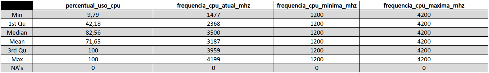
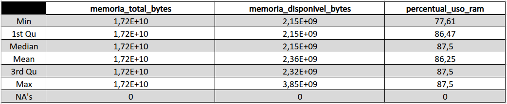
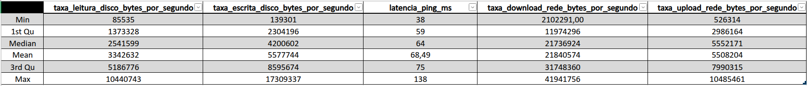
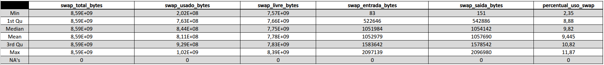
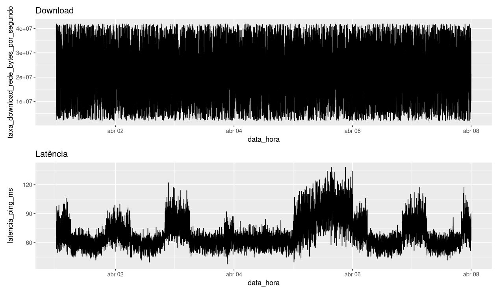
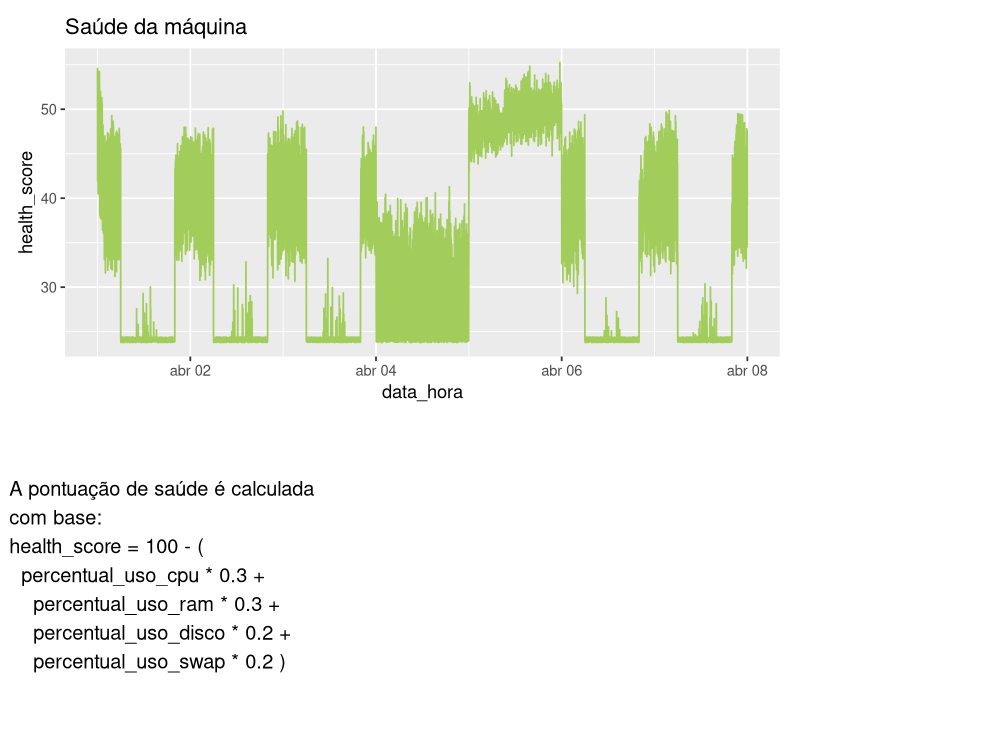

Elaboração técnica de métricas, métodos, transformações e visualizações disponiabilizádas na Dashboard




library(plotly)
library(htmlwidgets)
library(ggplot2)
p <- ggplot(df, aes(x = data_hora)) +
geom_line(aes(y = percentual_uso_cpu, color = "CPU")) +
geom_line(aes(y = percentual_uso_ram, color = "RAM")) +
geom_line(aes(y = percentual_uso_disco, color = "Disco")) +
scale_color_manual(values = c("CPU" = "red", "RAM" = "blue", "Disco" = "green")) +
labs(title = "Uso de recursos ao longo do tempo", color = "Recurso")
saveWidget(p, file = "plots/plot_uso_recursos.html", selfcontained = TRUE)
O valor foi calculado utilizando a média do consumo de CPU nos intervalos de uma hora, sendo exibida a média dessas horas nos dias monitorados.
Observa-se claros picos de atividade dentro das linhas analisadas durante dias específicos da semana e mês. Com maior concentração durante dias úteis(segunda, terça, quarta, quinta, sexta) e dias afastados de feriados populares.
Uso da CPU segue um padrão bem definido em relação ao horario do dia, Apesar de variações grandes entre diferentes dias e maquinas, todas seguem o desvio por hora que conecta com os horários esperados com maior fluxo de carros e passageiros.
O uso da CPU segue padrões esperados de consumo com tarefas na escala analisada, exceto durante momentos curtos em dias com baixa atividade enquanto horas de funcionamento com menor atividade, nessas janelas a CPU se encontra sendo minimamente utilizada.
Métodos como esse auxiliam na detecção anomalias, degradação e/ou falhas nos componentes do servidor RBC.
CPU e RAM seguiram o comportamento esperado, porem foi notado o acrescimo gradual de uso de disco interno, isso se deve a diferentes processos que escrevem dados no disco, isso demonstra que, em tempo, sem ação devida , os processos consumirão todo volume. Na simulação foi feito possivel um limitador integrado aos processos, mas na realidade tais eventos são observados e reparados por membros operacionais.
Seguindo comportamento esperado, proporcional ao nûmero de processos ativos naquele momento.
Seguindo comportamento esperado, proporcional ao nûmero de processos ativos naquele momento.
O percentual de uso de memoria SWAP disponivel deixa evidente a nessessidade de acrescimo de RAM, fazendo seu monitoramento em relação a RAM de grande relevância.

Enquanto a taxa de Download varia, porem se contendo a um espaço claro e definido em maximos e minimos. A latencia aparenta ser afetada por fatores externos, sem relação aos outros processos, mas afetando a execução deles, uma relação onde latencia afeta os processos, mas não o oposto.
Latência permite melhor estimativa e previsibilidade de problemas, o tempo de resposta, servidor carro, é essencial para o funcionamento do sistema de controle. O monitoramento dessas métricas permite maior controle e atenção a incidentes.

Seguindo comportamento esperado, proporcional ao nûmero de processos ativos naquele momento.
Métrica essencial em estimar Status de servidor RBC.